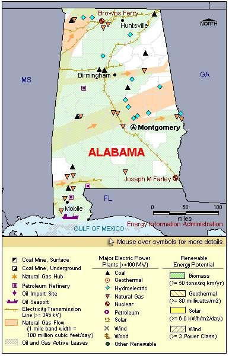

State Overview
There are two operating nuclear power plants in Alabama:
Browns Ferry in Limestone County
- The Browns Ferry nuclear plant is one of the largest electric plants in the nation in terms of nameplate capacity. Among nuclear plants, it is second only to Palo Verde in Arizona.
- Browns Ferry unit 1 was disabled by a fire in 1975. It was repaired and operated from 1976 through 1985. In May 2002, TVA approved a plan to rebuild the reactor. In June 2007, unit 1 was restarted.
- In 1985, TVA shut down its entire nuclear fleet, including all three units at Browns Ferry. TVA restarted unit 2 in 1991 and unit 3 in 1995.
- On May 4, 2006, licenses were renewed for all three reactors at Browns Ferry.
Joseph M. Farley in Houston County
- On May 12, 2005, the Nuclear Regulatory Commission (NRC) issued a 20-year license extension for both of Farley's reactors.
Contribution of Nuclear Power
With nearly 5,000 megawatts of net capacity, Alabama is one of the nation’s leaders in nuclear capacity and electricity generation.
Although nuclear power accounts for only about 15% of Alabama’s total electric capacity, nearly 25% of the State’s electricity generation comes from nuclear plants, second only to coal.
Like many States with a large nuclear power industry, Alabama is a net electricity exporter, exporting over 25% of its total electrical generation.
License Renewals
- Browns Ferry: In 2007, the Tennessee Valley Authority (TVA) restarted Browns Ferry unit 1, a commercial reactor that had been shut down for two decades.
- Browns Ferry: All three reactor licenses were renewed on May 4, 2006. The new license for unit 1 will expire in December 2033; unit 2 in June 2034; and unit 3, in July 2036.
- Joseph M. Farley: Both licenses were renewed on May 12, 2005. The license for unit 1 expires on June 25, 2037. The license for unit 2 expires in March 2041.
New Applications
- Bellefonte: The TVA is examining the feasibility of completing two previously permitted reactors (units 1 and 2) at the Bellefonte site in northern Alabama.
- Bellefonte: On October 30, 2007, the TVA applied for Combined Licenses (COL) for two new reactors (units 3 and 4) at the Bellefonte site. Both reactors would be Advanced Passive 1000 (AP1000) reactors.

|
| Alabama Total Electric Power Industry, Summer Capacity and Net Generation, by Energy Source, 2008 |
| Primary Energy Source |
Summer Capacity
(MW) |
Share of State Total
(Percent) |
Net Generation
(Thousand MWh) |
Share of State Total
(Percent) |
| Nuclear |
4,985 |
16.0 |
38,993 |
26.7 |
| Coal |
11,506 |
36.9 |
74,605 |
51.1 |
| Hydro and Pumped Storage |
3,272 |
10.5 |
6,136 |
4.2 |
| Natural Gas |
10,724 |
34.3 |
22,363 |
15.3 |
| Other1 |
100 |
0.3 |
212 |
0.1 |
| Other Renewable1 |
593 |
1.9 |
3,357 |
2.3 |
| Petroleum |
43 |
0.1 |
204 |
0.1 |
| Total |
31,222 |
100.0 |
145,870 |
100.0 |
| Alabama Nuclear Power Plants, Summer Capacity and Net Generation, 2008 |
| Plant Name/Total Reactors |
Summer Capacity
(MW) |
Net Generation
(Thousand MWh) |
Share of State
Nuclear
Net Generation
(Percent) |
Owner |
Browns Ferry
Unit 1, Unit 2, Unit 3 |
3,274 |
24,919 |
63.9 |
Tennessee Valley Authority |
Joseph M Farley
Unit 1, Unit 2 |
1,711 |
14,073 |
36.1 |
Alabama Power Co |
2 Plants
5 Reactors |
4,985 |
38,993 |
100.0 |
|
|
Plant Profiles
Browns Ferry Nuclear Plant
| Browns Ferry |
| Unit |
Summer Capacity
(MW) |
Net Generation
(Thousand MWh) |
Summer Capacity Factor
(Percent) |
Type |
Commercial Operation Date |
License Expiration Date |
| 1 |
1,065 |
8,191 |
87.8 |
BWR |
8/1/1974 |
12/20/2033 |
| 2 |
1,104 |
9,430 |
97.5 |
BWR |
3/1/1975 |
6/28/2034 |
| 3 |
1,105 |
7,299 |
75.4 |
BWR |
3/1/1977 |
7/2/2036 |
| |
3,274 |
24,919 |
86.9 |
|
|
|
Operator: Tennessee Valley Authority (TVA)
Location: The Browns Ferry plant is located on an 840-acre site near Athens, Alabama.
Construction Cost: $3.259 billion (2007 USD)
Reactor Descriptions: All units are General Electric Type 4 boiling water reactors.
Cooling System: The Browns Ferry site is cooled by mechanical draft cooling towers that draw water from the Wheeler Reservoir on the Tennessee River.
(Joseph M.) Farley Nuclear Power Plant
| Joseph M Farley |
| Unit |
Summer Capacity
(MW) |
Net Generation
(Thousand MWh) |
Summer Capacity Factor
(Percent) |
Type |
Commercial Operation Date |
License Expiration Date |
| 1 |
851 |
7,279 |
97.6 |
PWR |
12/1/1977 |
6/25/2037 |
| 2 |
860 |
6,794 |
90.2 |
PWR |
7/30/1981 |
3/31/2041 |
| |
1,711 |
14,073 |
93.9 |
|
|
|
Operator: Alabama Power Company
Location and Service Territory: The Joseph M. Farley plant, near Dothan, Alabama, is on a 1,850-acre, wooded and agricultural site along the Chattahoochee River in Houston County.
Construction Cost: $4.115 billion (2007 USD)
Staffing: Approximately 800 employees
Reactor Descriptions: Both Farley units are Westinghouse three-loop pressurized water reactors.
Cooling System: The Joseph Farley facility is cooled using six mechanical draft cooling towers supplied by water from the Chattahoochee River.
see also:
more annual nuclear statistics
projected electricity capacity to 2035
international
electricity statistics
|
|